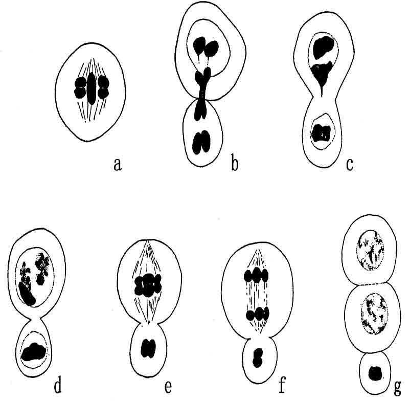

成雄精子的退化
瘤蚜Phylloxerans和蚜Aphids两属有密切的亲缘关系，两者同属于XX—XO型，但成雄精子（没有X）退化（图133），只剩下成雄精子（有X）。营有性生殖的卵子（XX）在放出两个极体以后，只留下一条X染色体。这种卵子同X精子受精，只能产生雌性（XX）。这种雌性称为系母，进行单性生殖，是以后各代借单性生殖的其他雌虫的起点。经过相当时期以后，在这些雌虫里，有些可以产生雄性后代，有些产生有性生殖的雌虫。后者像母虫一样是二倍体，不过它们的染色体成对接合，染色体数目减少一半。前者则借下节所讲的过程，产生雄虫。

图133 示bearberryaphid蚜的二次成熟分裂过程。在第一次分裂中（a~c），大染色体进入一个细胞；在第二次分裂中（e、f、g），这个细胞又分裂成两个有作用的成雌精子，另一个发育不全的细胞（d）则不再分裂